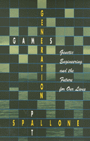

A ground-breaking work in ecofeminism, biotechnology, and social ethics
A ground-breaking work in ecofeminism, biotechnology, and social ethics


 A ground-breaking work in ecofeminism, biotechnology, and social ethics
A ground-breaking work in ecofeminism, biotechnology, and social ethics

|  |
Generation GamesGenetic Engineering and the Future for Our LivesPat Spallonepaper EAN: 978-0-87722-967-4 (ISBN: 0-87722-967-8) |
Generation Games is a ground-breaking work in ecofeminism, biotechnology, and social ethics. Pat Spallone provides general readers with facts, issues, and ethical questions related to the genetic engineering of seeds, plants, microorganisms, animals, people, and in particular, of women in medical therapies. Synthesizing much of the history and commentary on biotechnology, she shows how genetic engineers mine and manage biological resources for applications that point to the increasing industrialization of life forms.
Spallone explores the global political contests engendered by developments in plant genetics and manipulation of domestic livestock. She analyzes the increasing privatization of nature and nature's resources as more plants and animals fall under the control of multinational corporations, and she discusses the patenting of living things. Viewing genetic engineering as a politically important subject, Spallone contends that these biological developments are implicated in an industrial, scientific, and political agenda "which is at loggerheads with progressive social development." In Generation Games, she grapples with the complex relations between science and society.
Acknowledgments
Introduction
1. The Gene Revolution
2. Biotechnology Now
3. Protection Against Pests
4. Will Genetic Engineering Help Developing Countries?
5. Who Owns Life? The Patenting of Hiring Things
6. Vaccines and Future Ills
7. Genes-the-Cause
8. Reproductive Engineering
9. Gene Maps
10. Gene Weapons
Epilogue Life After Genes
Appendix Gene Therapy
Notes
Resources
Selected Bibliography
Glossary
Index
Pat Spallone, a freelance researcher and writer associated with the Centre for Women's Studies at the University of York, previously worked as a biochemist in medical research at the University of Pennsylvania School of Medicine.
Women's Studies
General Interest
Nature and the Environment
© 2015 Temple University. All Rights Reserved. This page: http://www.temple.edu/tempress/titles/1122_reg.html.